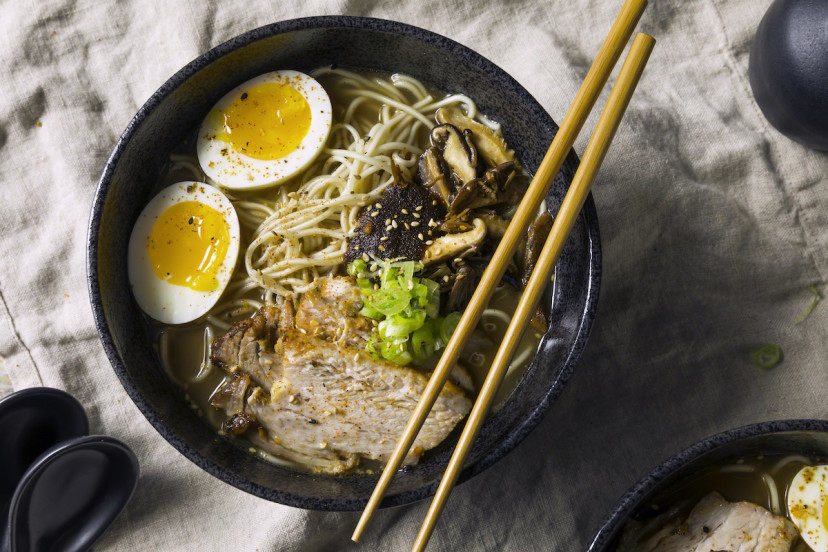

Ramen

How to Make Lasagna
Ramen are thin, yellow noodles made from wheat and typically served in a
flavorful hot broth. Kansui (alkaline water) gives ramen noodles their
unique, springy texture and yellow color. Ramen originated in China, but
it became very popular in Japan, particularly after World War II, when
Ramen's popularity rose above other Japanese noodles such as soba and
udon.
Ingredients Required
- 2 tablespoons toasted sesame oil
- 4 Garlic Cloves , minced
- 1 2-inch piece ginger , minced
- 1 shallot minced
- 2 tbsp toasted sesame seeds
- chicken broth
- salt
- Miso Paste
- sugar
- ramen noodles
- soft-boiled eggs
- 4 bok choy
- scallions,thinly sliced
- la-yu (Japanese chili oil)
Steps
- In a large wok or Dutch oven over medium heat, heat sesame oil until fragrant.
- Add the minced garlic, ginger, and shallots. Stir-fry until fragrant, about 30 seconds.
- Add the miso paste and ground sesame seeds and stir to incorporate.
- Add the chicken broth and bring to a simmer. Taste and adjust seasoning with salt and/or sugar, if needed.
- Meanwhile, bring a large pot of unsalted water to a boil over high heat and cook the ramen noodles according to package directions.
- Divide ramen noodles between 4 bowls. Ladle soup base over cooked noodles.
- Halve soft-boiled eggs and add to ramen bowls.
- Garnish with bok choy, sliced scallions, and la-yu.